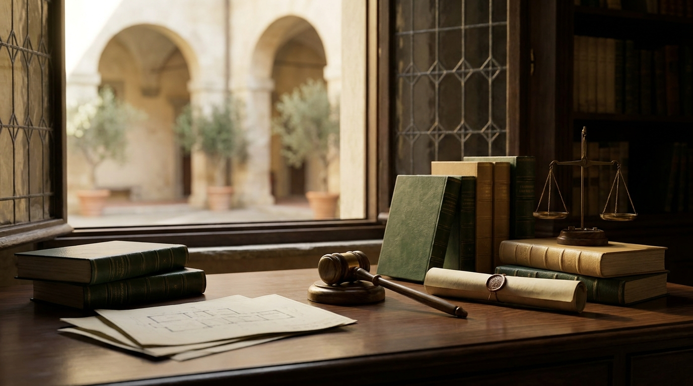

Multe in condominio: quando e come si possono introdurre
Le sanzioni pecuniarie per chi viola il regolamento condominiale non sono automatiche: dipendono da come e con quali maggioranze vengono deliberate. Una recente pronuncia della Corte d'appello di Milano distingue tra la modifica di clausole già esistenti e l'introduzione di multe del tutto nuove, con conseguenze rilevanti sulla loro validità.

Il caso
La Corte d'appello di Milano è tornata su un tema ricorrente nella vita condominiale: la possibilità di sanzionare con una multa il condòmino che non rispetta il regolamento. La questione non è banale, perché tocca due profili diversi: quando la sanzione può essere introdotta e con quale maggioranza deve essere deliberata.
Il punto di partenza è semplice. Una multa, per essere esigibile, deve trovare fondamento in una previsione del regolamento condominiale. Non basta una delibera estemporanea dell'assemblea a fronte di un comportamento sgradito: serve una regola scritta che colleghi una determinata violazione a una determinata sanzione.
Inquadramento normativo
La norma di riferimento è l'art. 70 delle disposizioni di attuazione del Codice civile, modificato dalla L. 220/2012 (la riforma del condominio). La disposizione prevede che, per le infrazioni al regolamento condominiale, possa essere stabilito a titolo di sanzione il pagamento di una somma fino a 200 euro e, in caso di recidiva, fino a 800 euro. Le somme riscosse confluiscono nel fondo per le spese ordinarie.
Il testo fissa quindi un tetto massimo, ma rimanda al regolamento la concreta individuazione delle condotte sanzionabili e degli importi. Da qui la distinzione decisiva che emerge dalla pronuncia milanese: una cosa è modificare una clausola sanzionatoria già presente nel regolamento, altra cosa è introdurre ex novo un sistema di multe prima inesistente.
La differenza incide sulle maggioranze. La modifica di un regolamento di natura contrattuale — quello cioè predisposto dall'originario costruttore o accettato all'unanimità — richiede in linea di principio il consenso di tutti i condòmini quando intacca diritti individuali. Le clausole di natura meramente organizzativa, invece, seguono le maggioranze ordinarie previste dall'art. 1138 c.c. e dall'art. 1136 c.c.
Implicazioni pratiche
Per i condòmini e per l'amministratore questo significa che non ogni delibera sulle multe ha lo stesso valore.
Se il regolamento già contempla un apparato sanzionatorio, l'assemblea può intervenire per aggiornarne gli importi o ridefinirne le ipotesi con le maggioranze ordinarie. Si tratta di un adeguamento di una regola già accettata dalla collettività condominiale.
Quando invece la multa viene introdotta per la prima volta, e tocca la sfera dei singoli imponendo un obbligo prima inesistente, la maggioranza richiesta è più rigorosa. Una delibera assunta senza il quorum adeguato è esposta al rischio di annullamento se impugnata nei termini previsti dall'art. 1137 c.c.
Conta anche la corretta verbalizzazione. La sanzione deve essere applicata seguendo un procedimento trasparente: contestazione della violazione, possibilità per il condòmino di far valere le proprie ragioni, delibera motivata. L'automatismo nudo e crudo è terreno fertile per il contenzioso.
Cosa fare in concreto
- Verificate la natura del regolamento prima di deliberare: contrattuale o assembleare. Da questo dipende la maggioranza necessaria e il margine di intervento dell'assemblea.
- Distinguete tra modifica e introduzione ex novo delle sanzioni. Se le multe non erano mai state previste, valutate il quorum più elevato e, nei casi dubbi, l'unanimità.
- Rispettate i tetti dell'art. 70: 200 euro per la singola infrazione, 800 euro in caso di recidiva. Importi superiori sono illegittimi.
- Curate la verbalizzazione: indicate la clausola violata, la sanzione applicata e le ragioni della decisione. Un verbale generico è più facilmente impugnabile.
- Valutate l'impugnazione nei termini (30 giorni dalla delibera per i condòmini assenti o dissenzienti) se ritenete viziata la deliberazione che introduce o applica la multa.
Il tema, in apparenza minore, è in realtà uno dei più frequenti motivi di lite tra condòmini. Consigliamo di affrontarlo in via preventiva, intervenendo sul regolamento con la dovuta attenzione alle maggioranze, piuttosto che gestirlo nel momento conflittuale della singola sanzione.
*Contributo informativo a cura di Tamburro & Partners - Avv. Giuseppe Tamburro. Non costituisce parere legale.*
Ogni condominio ha una storia a sé.
Se gestisci un'amministrazione e vuoi un confronto su una specifica questione condominiale, scrivi allo studio. Ti rispondiamo entro un giorno lavorativo.